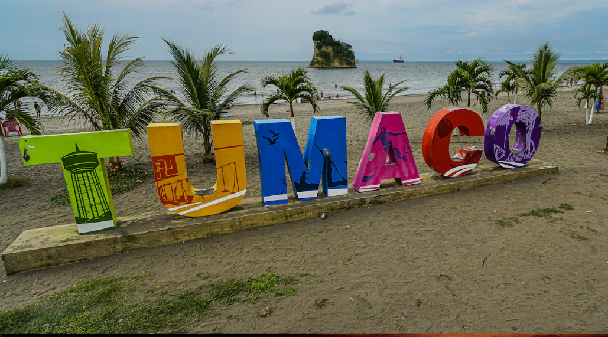

Misión
Somos la fundación Manos Bendecidas, una institución sin ánimo de lucro que hace contribución al mejoramiento de la calidad de vida y desarrollo de cada uno de los asociados, y población en general, con énfasis en la población más vulnerable, mediante la investigación, producción; procesamiento, la comercialización de diversos productos, y la promoción social continua de diferentes procesos y servicios, aplicando estrategias como el trabajo autogestionario y productivo, la planeación, la generación y ejecución de toda clase de programas y proyectos individuales y colectivos de carácter social derivados de los asociados o en atención a las necesidades poblacionales; haciendo uso de alianzas con instituciones públicas y privadas de carácter nacional e internacional, integrando los Valores Bíblicos con las disciplinas del desarrollo humano, la tecnología, y el personal competente para servir y generar la transformación personal y colectiva que la sociedad requiere
Visión
En 7 años convertirnos en aliado estratégico de las instituciones y organizaciones públicas y privadas de carácter local nacional e internacional que brindan promoción, prevención y atención a la familia; la niñez; la juventud; población altamente vulnerable y población en general en la planeación, programación y ejecución de servicios sociales y estrategias de intervención, por la gestión trasparente, eficiente y eficaz en la administración de recursos, el impacto transformador de las intervenciones y los valores éticos y espirituales que fundamental la cultura organizacional.